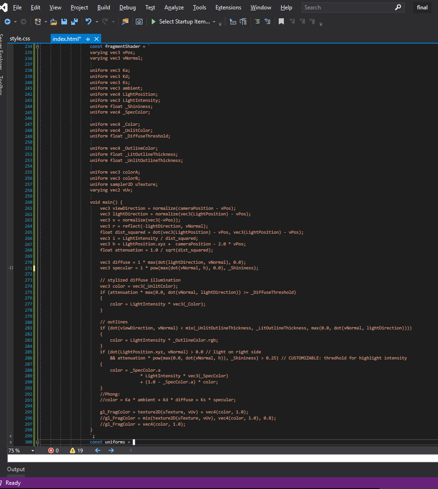
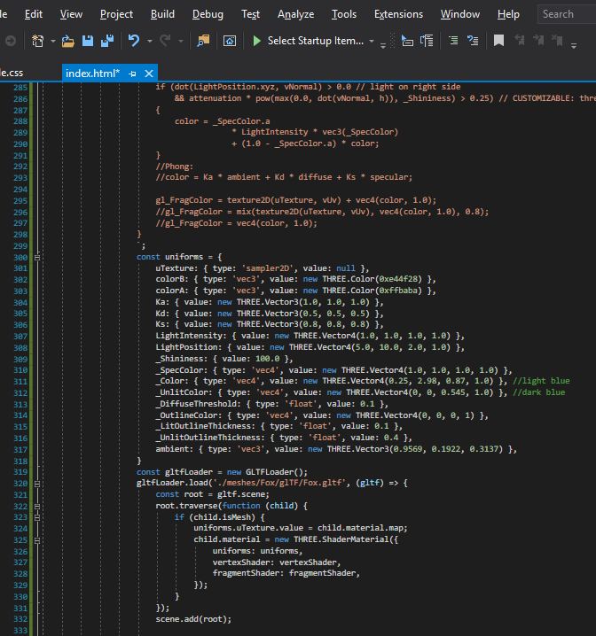
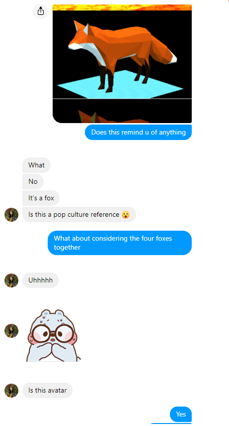

CS 184: Computer Graphics and Imaging | Summer 2020
Michelle Mao
Final Project Proposal
The Last Shader
Extend Project 4 to create four of my own shaders inspired by the four elements. Solo team.
Problem Description
When running my raytracing programs in project 3, my CPU was taking some heat (especially with naive implementations). My PC actually crashed once. And this is all for rendering a single still frame! If this is how all graphics are made, then how am I able to play games in real time with 100+ fps without my computer blowing up? That's where a GPU comes in. GPUs run programs in parallel, implementing parts of the graphics pipeline (vertex and/or fragment processing) at much faster speeds. These programs are called shaders.
My challenge is in developing a deep understanding of what shaders are--at least enough to implement some cool ones successfully. Because though the significance of shaders in producing high quality real time graphics was pointed out in class, the only explanation of what they actually are and how they work was a few minutes of one lecture that gave an overview of the rasterization pipeline (lecture 6) that, until I went back to review just now, totally flew over my head.
In other words, the problem I am trying to solve is my ignorance on real time graphics. As a gamer I feel a sense of obligation to learn more about this topic, and my plan to address it is to extend the portion of a project that leverages the GPU, to leverage it even further, and develop a good understanding of programs that run on GPU.
Graphics Pipeline
Goals and Deliverables
Target Goals
Create 4 shaders that are somehow reminiscent of the four elements: water, earth, fire, air.
GUI that toggles between shaders OR allows customization in real time
Stretch Goals
Generate procedural scenes using a time uniform
Apply shaders to object types beyond the sphere/cloth provided in project 4
Success metrics
If I show a random person the results of the four shaders, what is the probability that they think Avatar: The Last Airbender?
Rendering speed is similar to those implemented in project 4
Accuracy in apperance of water, earth, fire, air as seen in real life
Schedule
Days 1-3: 1) Complete Project 4, and 2) play around with shaders implemented
Days 4-6: Choose one of four elements and 1) understand some existing shaders replicating it, and 2) write my own shader for it
Hi John! Thank you for the thoughtful and kind feedback. You're entirely correct in pointing out that I lacked a technical approach in my proposal. Frankly, at that point I hadn't completed the shaders portion of project 4 yet so didn't even know what GLSL looked like yet, and of course that showed in my proposal :').
I'm in a bit of a pickle and would love some advice. Here's what I've done so far:
Followed this tutorial to implement toon shading in Custom.frag:
Realized I need another object that’s not a sphere to really see the effects.
Tried to figure out how to add my own objects.
Realized adding objects on top of the proj4 codebase is complex and not worth.
Decided to turn to WebGL
Followed along this series: https://www.youtube.com/watch?v=kB0ZVUrI4Aw
Developed a good understanding of how WebGL works (also realizing it's pretty rough/tedious without another API). Got stuck on lighting portion (video is old and used deprecated code)
Found this: https://developer.mozilla.org/en-US/docs/Web/API/WebGL_API/Tutorial/Lighting_in_WebGL
Resulted in WebGL canvas above. It's just the texture shader with my own texture and direct vertex lighting.
Along the way I was looking for examples that I could use as reference but it seems that I had a misunderstanding of shaders. If I understand them correctly now, I believe I have to find a specific 3D object/scene that has enough complexities to it (curves, shadows, etc.) such that the lighting and colors can actually be tweaked to produce the animated/toon effect I'm looking for, i.e. even if I had a working shader, using it on a sphere won't work. Thus my job here is not just to write shaders but to also create my own scenes (or find them? But I haven't been able to do that). Which makes my goal more far reaching than I anticipated.
I also realized that simply sampling a texture of a PNG of the four elements could do the trick, but that's lame.
I have WebGL running, can reproduce shaders from proj4 in WebGL syntax, but no longer believe in my initial goal of the four elements :(. I'm stuck on how to render different objects (e.g. a water drop?) and how I can go beyond texture sampling to produce something that looks like air/water/earth/fire that actually utilizes the course material on radiometry/photometry and isn't just a cool animation. I'm worried that if I venture into the world of three.js or other APIs that I'm unfamiliar with that I'll be spending too much time on learning how to use them than actually practicing the course content and implementing shaders. Any guidance would be much appreciated.
Phong shading
Toon(?) shading
Final Project Report
Abstract
Inspired by Avatar: The Last Airbender, an animated series that recently boomed in popularity after airing back in 2005 about a world of "benders" AKA humans that can control one or more of the four elements (water, earth, fire, air), I set off on the task to produce something replicating these four elements with my newly acquired knowledge of computer graphics. The final results are shown above: four canvases of the same WebGL-based scene (a fox mesh on top of a plane mesh) with different lighting, textures, and shaders to produce four different looks.
Technical Approach
The camera perspective, rendering loop, and mouse controls for all scenes were based this code from threejsfundamentals.org.
Initially I was convinced that writing my own shaders on top of the project 4 code was the way to go. However, I quickly discovered that though employing my own shaders in that code was hassle-free due to the wonderful abstraction barrier that course staff provided between the shader program files and the rest of the rasterization pipeline, this in turn made an attempt to break that abstraction barrier and add customized objects (beyond the given sphere and cloth) a task beyond what I was confident achieving. So I turned to other libraries and thanks to the advice of TA John settled on WebGL, ThreeJS, and glTF as my main tech stack.
My first task was to get a fancier mesh on my canvas. I settled on the fox shown above. Then after figuring out how to load a glTF with ThreeJS syntax, I ran into a pivotal problem: applying a custom shader to glTFs. The reader may have to open the following images in a new tab to read the code.


The image on the left is my fragment shader that is based on cel shading as defined in Wikibooks: GLSL Programming. It is in string form to be sent to the GPU (I debugged this by first running my shaders in proj4 then pasting them in string form as a const in my Javascript). The image on the right includes how I sent uniforms to my fragments and, starting from line 319, how I replacedFox.gltf's material map with my shader. This is significant because this was the only way I found to integrate a custom shader into a glTF, which is a nicely packed file format for 3D scenes and models (which I now know is not customization-friendly), but this method overwrote lighting effects that were written in ThreeJS outside of this function fed into glTFLoader.load. We can see this in the first canvas above, which is what the pictured code resulted in. Even if I added a point light below the fox in the overall WebGL scene (as I did in the 2nd canvas "Fire"), it would not have an effect on the apparent lighting on the fox. This implies that if I wanted to achieve all visual effects through a custom shader, I would have one two long strings of shader program that I fed into this glTF and nothing else outside of that code, essentially undermining the usefulness of ThreeJS and producing code that just doesn't look appealing to write or read and would be diffuclt to debug. So after the first canvas ("Air"), I called an end to my pursuit of writing custom shaders.
The second phase of my technical approach involved using my knowledge of lighting and texture mapping, which albeit less technical in implementation, was a real challenge for me as someone not at all confident in my visual art abilities. The first thing I did was using texture mapping to create different "grounds" for the foxes to stand on. This was achieved with a built-in ThreeJS texture loader that I would set as the mesh's material (you may find the texture images in the source code under docs/textures/). Then, I asked questions like "what would putting a point light here do?" "what if I changed the color?" "what should the intensity drop off be?" For example, in the 2nd mesh "Fire," I tried to simulate the light from flames with two point lights--one directly under the fox at coordinates (0,0,0) and one below its snout at (0,15,50). In the 4th mesh "Earth," I tried to create a dull, flat look that was almost diffuse-looking but unlike Phong shading would preserve the sharp geometric edges, because I thought the simple geometric mesh look had an "earthy" feel to it. After playing around with different light types and angles, I eventually settled on a hemisphere light (directly above scene) with color fading from the "sky color" brown (0x472c06) to a "ground color" of moss green (0x4a5d23) which lit the geometric mesh without making it look specular like a white light would (such as in the 3rd mesh "water"), and gave the fox's underbelly a mossy green tint. As well as a directional light at position (3,10,2) which is the front-right of the fox and shining towards the origin. This light is white but at intensity=0.5 to create a realistic visual where one side of the fox is lit as if it is standing in the sun, without compromising the dim look I was going for.
At some point I stumbled upon the Fog built-in class of ThreeJS. I played around with it and used it in the first mesh "Air" because, well, that's where fog would be. Unfortunately, due to the problem I outlined in the previous pargraph of custom shaders overwriting all other WebGL components, the blurring-into-background-color effect that defines the fog only applies to the circular plane that the fox stands on and not the fox itself. You may see the resulting effect of "fog" by zooming in/out and looking closely for a white circular plane that the fox is standing on which should fade into the background light blue as you zoom out and become more clear as you zoom in.
Evaluation

My success metrics were:
If I show a random person the results of the four shaders, what is the probability that they think Avatar: The Last Airbender?
Rendering speed is similar to those implemented in project 4
Accuracy in apperance of water, earth, fire, air as seen in real life
I think I did an acceptable job. The screenshot on the left was truly the first person I messaged so I would consider the first evaluation metric passed! I guess the second metric doesn't apply anymore as I pivioted away from building on top of project 4 code. Though the rendering seems to be instanteanous, which is likely due to the lack of shadows in all my scenes (According to ThreeGL documentation, shadow ray tracing is expensive for the built-in light sources they provide). My weakest performance was in passing the third success metric. The flat plane geometry is not realistic.
If I were to spend more time on this project, I would first tackle bump mapping on the ground that the fox stands to produce more realistic lava and dirt for the Fire and Earth scenes, respectively. Then I would add a reflective component to the Water scene to more accurately simulate water.
Things I Learned
The project 4 source code is so beautifully produced and presented to students.
WebGL + ThreeJS is a very powerful combo with what seems to me like endless possibilities and huge potential to create awesome graphics.
Because Shaders run on the GPU, the way we write them and incorporate them in our code is atypical. Debugging becomes difficult as well.
Shaders' strengths are also their weakness. They run in parallel on the GPU which means we have to be especially mindful about where in the rasterization pipeline we are utilizing them, which may not be apparent in our code and is something the programmer must account for themselves.
In class we often defaulted to white color sources and focused on how their trajectory created different visual effects. However, varying light source colors is also a powerful technique to produce different visual effects.